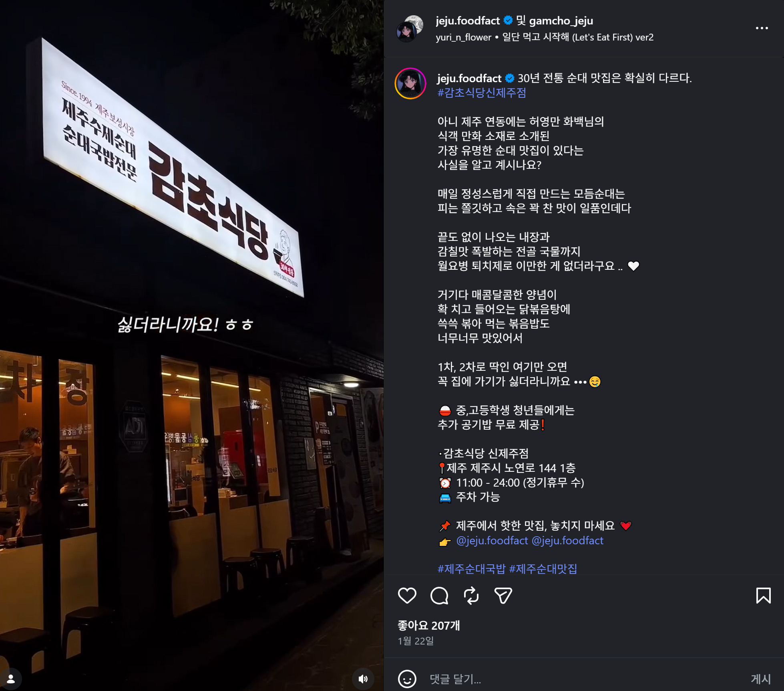
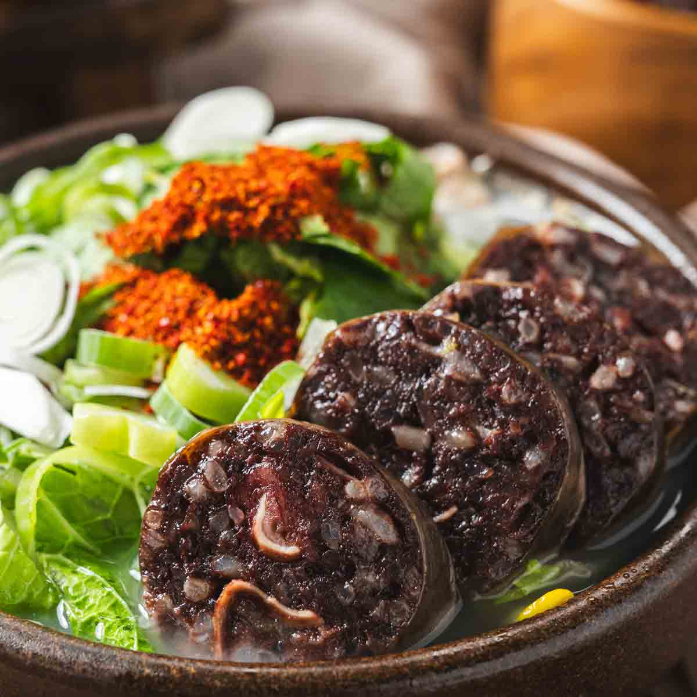

SNS REVIEW
인스타그램 속 감초식당




실제 방문 고객들이 남겨주신 소중한 후기와 감초식당의 따뜻한 분위기를 만나보세요.
감초식당은 제주 도민과 여행객 모두에게 꾸준히 사랑받고 있습니다.
“ 제주 여행 마지막날 우연히 들렸는데 진짜 인생 국밥집 발견했어요. 국물 깊이가 다르고 순대가 정말 맛있네요. ”
“ 관광객 느낌보다 진짜 제주 로컬 맛집 분위기라 너무 좋았어요. 직원분들도 친절하고 재방문 의사 있습니다. ”
“ 방송보고 방문했는데 기대 이상입니다. 국물도 진하고 술국도 최고였어요. ”

제주 여행 중 오래 기억되는 한 그릇이 되어드립니다.